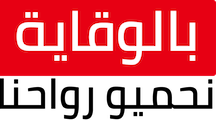

Quels sont les symptômes de la COVID-19?
La fièvre, la toux et les problèmes respiratoires sont les symptômes les plus souvent observés chez les enfants.
Certains pourraient aussi sourir d’un mal de gorge, de douleurs musculaires, d’un nez qui coule, de diarrhées ou de vomissements.
Des enfants infectés pourraient connaître une perte soudaine de l’odorat ou du goût, sans congestion nasale.
Confinement
Précautions pour éviter la contagion à la maison
Idéalement, une seule personne devrait prendre soin de l’enfant malade. Cette personne ne devrait pas avoir une condition de santé qui la rend vulnérable à la COVID-19.
Lorsque vous prenez soin d’un enfant infecté, assurez-vous de bien laver vos mains et de les sécher avec des serviettes de papier jetable. Évitez aussi de toucher vos yeux, votre nez et votre bouche avec des mains non lavées. Les vêtements de votre enfant et sa literie peuvent être lavés avec le reste de la lessive familiale, mais utilisez de l’eau chaude et séchez bien le tout.
Votre enfant ne devrait pas jouer avec d’autres enfants ou partager ses objets personnels, ses aliments ou ses boissons avec les autres membres de la famille.
Sources d'informations, liens et numéros utiles
Vous pouvez suivre la situation de l'épidémie de Coronavirus en Tunisie et dans le monde
Pour plus d'informations ou pour déclarer un cas d'infection :
Appelez le numéro vert 80 10 19 19
En cas de fièvre ou sensation de fièvre, toux, difficultés à respirer :
Contacter rapidement le SAMU au 190
Rappel des mesures individuelles d'hygiène et de prévention
Se laver les mains plusieurs fois par jour ou les frictionner avec une solution hydro-alcoolique. Ne pas se frotter les yeux et éviter de mettre les mains dans sa bouche
Utiliser un mouchoir pour se couvrir le nez et la bouche en cas de toux et/ou d'éternuement et le jeter immédiatement à la poubelle ou se couvrir le nez et la bouche par le pli du coude
Garder une distance d'un mètre si la personne présente des signes respiratoires (toux, difficulté respiratoire, et/ou de la fièvre)
Protocole sanitaire pour le tourisme tunisien anti covid-19
Le nouveau Protocole sanitaire pour le tourisme tunisien mis en place par l’Office national du tourisme tunisien a été finalisé et approuvé par toutes les parties prenantes.
Les opérateurs du secteur sont tenus de l’appliquer à partir du 4juin 2020 à l’ouverture de leurs établissements